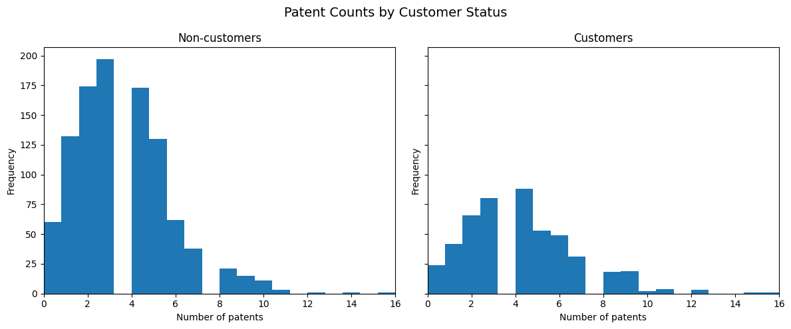
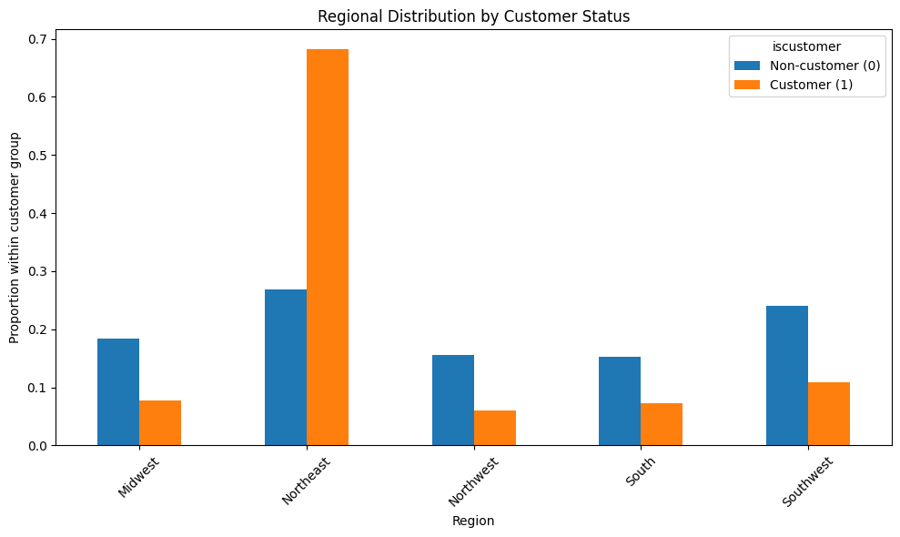
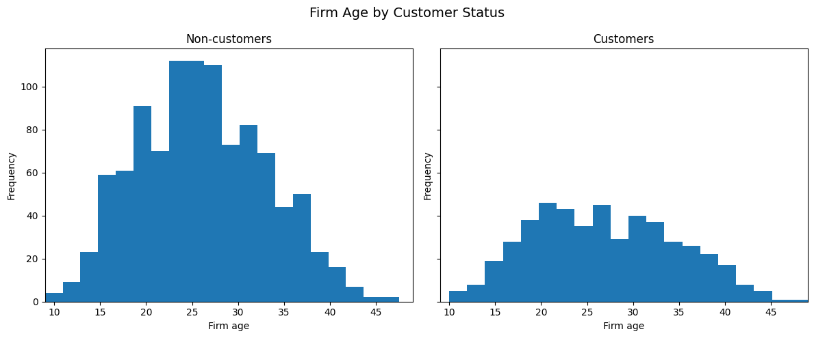
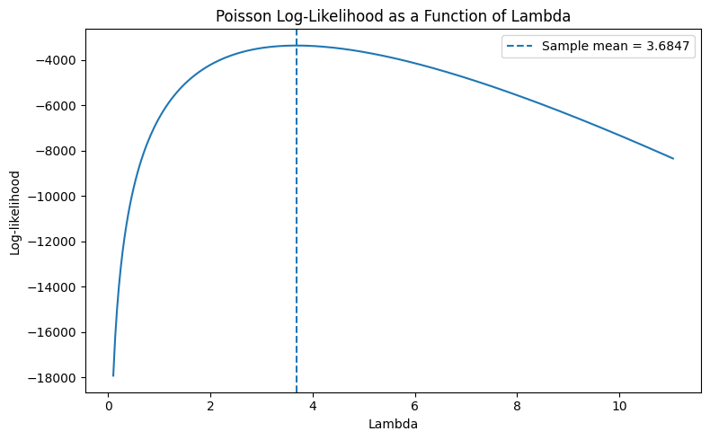
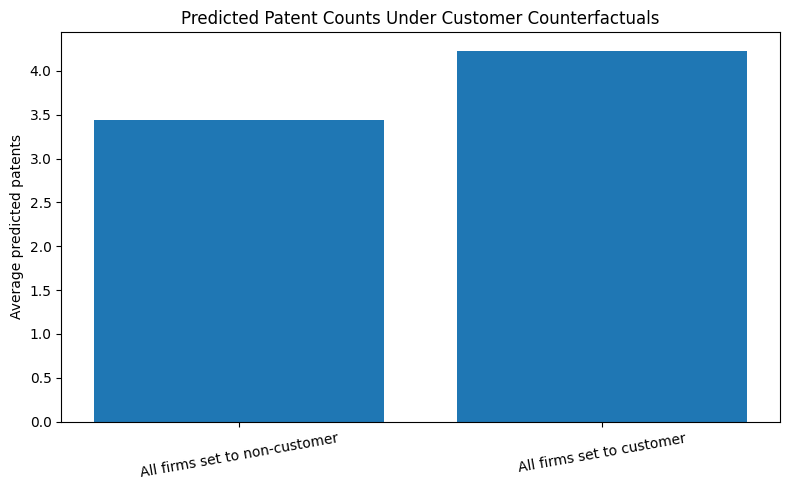

import numpy as np
import pandas as pd
import matplotlib.pyplot as plt
import seaborn as sns
from scipy.optimize import minimize
from scipy.special import gammaln
import statsmodels.api as smdf = pd.read_csv("blueprinty.csv")
print("Shape:", df.shape)
print("\nColumns:")
print(df.columns.tolist())
print("\nFirst 5 rows:")
display(df.head())
print("\nData types:")
print(df.dtypes)
print("\nMissing values:")
print(df.isnull().sum())
print("\nSummary statistics:")
display(df.describe(include="all"))Shape: (1500, 4)
Columns:
['patents', 'region', 'age', 'iscustomer']
First 5 rows:| patents | region | age | iscustomer | |
|---|---|---|---|---|
| 0 | 0 | Midwest | 32.5 | 0 |
| 1 | 3 | Southwest | 37.5 | 0 |
| 2 | 4 | Northwest | 27.0 | 1 |
| 3 | 3 | Northeast | 24.5 | 0 |
| 4 | 3 | Southwest | 37.0 | 0 |
Data types:
patents int64
region object
age float64
iscustomer int64
dtype: object
Missing values:
patents 0
region 0
age 0
iscustomer 0
dtype: int64
Summary statistics:| patents | region | age | iscustomer | |
|---|---|---|---|---|
| count | 1500.000000 | 1500 | 1500.000000 | 1500.000000 |
| unique | NaN | 5 | NaN | NaN |
| top | NaN | Northeast | NaN | NaN |
| freq | NaN | 601 | NaN | NaN |
| mean | 3.684667 | NaN | 26.357667 | 0.320667 |
| std | 2.352500 | NaN | 7.242528 | 0.466889 |
| min | 0.000000 | NaN | 9.000000 | 0.000000 |
| 25% | 2.000000 | NaN | 21.000000 | 0.000000 |
| 50% | 3.000000 | NaN | 26.000000 | 0.000000 |
| 75% | 5.000000 | NaN | 31.625000 | 1.000000 |
| max | 16.000000 | NaN | 49.000000 | 1.000000 |
group_means = df.groupby("iscustomer")["patents"].mean()
group_counts = df.groupby("iscustomer")["patents"].count()
print("Mean patents by customer status:")
print(group_means)
print("\nCount by customer status:")
print(group_counts)Mean patents by customer status:
iscustomer
0 3.473013
1 4.133056
Name: patents, dtype: float64
Count by customer status:
iscustomer
0 1019
1 481
Name: patents, dtype: int64customer_df = df[df["iscustomer"] == 1]
noncustomer_df = df[df["iscustomer"] == 0]
x_min = df["patents"].min()
x_max = df["patents"].max()
fig, axes = plt.subplots(1, 2, figsize=(12, 5), sharex=True, sharey=True)
axes[0].hist(noncustomer_df["patents"], bins=20)
axes[0].set_title("Non-customers")
axes[0].set_xlabel("Number of patents")
axes[0].set_ylabel("Frequency")
axes[0].set_xlim(x_min, x_max)
axes[1].hist(customer_df["patents"], bins=20)
axes[1].set_title("Customers")
axes[1].set_xlabel("Number of patents")
axes[1].set_ylabel("Frequency")
axes[1].set_xlim(x_min, x_max)
plt.suptitle("Patent Counts by Customer Status", fontsize=14)
plt.tight_layout()
plt.show()
print("Mean patents for non-customers:", noncustomer_df["patents"].mean())
print("Mean patents for customers:", customer_df["patents"].mean())
Mean patents for non-customers: 3.4730127576054954
Mean patents for customers: 4.133056133056133region_counts = pd.crosstab(df["region"], df["iscustomer"])
region_props = pd.crosstab(df["region"], df["iscustomer"], normalize="columns")
print("Region counts by customer status:")
display(region_counts)
print("Region proportions by customer status:")
display(region_props)
region_props.plot(kind="bar", figsize=(10, 6))
plt.title("Regional Distribution by Customer Status")
plt.xlabel("Region")
plt.ylabel("Proportion within customer group")
plt.legend(["Non-customer (0)", "Customer (1)"], title="iscustomer")
plt.xticks(rotation=45)
plt.tight_layout()
plt.show()Region counts by customer status:| iscustomer | 0 | 1 |
|---|---|---|
| region | ||
| Midwest | 187 | 37 |
| Northeast | 273 | 328 |
| Northwest | 158 | 29 |
| South | 156 | 35 |
| Southwest | 245 | 52 |
Region proportions by customer status:| iscustomer | 0 | 1 |
|---|---|---|
| region | ||
| Midwest | 0.183513 | 0.076923 |
| Northeast | 0.267910 | 0.681913 |
| Northwest | 0.155054 | 0.060291 |
| South | 0.153091 | 0.072765 |
| Southwest | 0.240432 | 0.108108 |

age_min = df["age"].min()
age_max = df["age"].max()
fig, axes = plt.subplots(1, 2, figsize=(12, 5), sharex=True, sharey=True)
axes[0].hist(noncustomer_df["age"], bins=20)
axes[0].set_title("Non-customers")
axes[0].set_xlabel("Firm age")
axes[0].set_ylabel("Frequency")
axes[0].set_xlim(age_min, age_max)
axes[1].hist(customer_df["age"], bins=20)
axes[1].set_title("Customers")
axes[1].set_xlabel("Firm age")
axes[1].set_ylabel("Frequency")
axes[1].set_xlim(age_min, age_max)
plt.suptitle("Firm Age by Customer Status", fontsize=14)
plt.tight_layout()
plt.show()
print("Mean age for non-customers:", noncustomer_df["age"].mean())
print("Mean age for customers:", customer_df["age"].mean())
Mean age for non-customers: 26.101570166830225
Mean age for customers: 26.9002079002079Y = df["patents"].values
def poisson_loglikelihood(lam, Y):
"""
Poisson log-likelihood for iid Y ~ Poisson(lambda)
lam: scalar > 0
Y: numpy array of counts
"""
if lam <= 0:
return -np.inf
return np.sum(Y * np.log(lam) - lam - gammaln(Y + 1))lam_grid = np.linspace(0.1, Y.mean() * 3, 300)
loglik_values = [poisson_loglikelihood(lam, Y) for lam in lam_grid]
plt.figure(figsize=(8, 5))
plt.plot(lam_grid, loglik_values)
plt.axvline(Y.mean(), linestyle="--", label=f"Sample mean = {Y.mean():.4f}")
plt.title("Poisson Log-Likelihood as a Function of Lambda")
plt.xlabel("Lambda")
plt.ylabel("Log-likelihood")
plt.legend()
plt.tight_layout()
plt.show()
print("Sample mean of patents:", Y.mean())
Sample mean of patents: 3.6846666666666668def neg_poisson_loglikelihood(lam_array, Y):
lam = lam_array[0]
if lam <= 0:
return 1e12
return -poisson_loglikelihood(lam, Y)
initial_lambda = np.array([Y.mean()])
result_lambda = minimize(
neg_poisson_loglikelihood,
x0=initial_lambda,
args=(Y,),
method="L-BFGS-B",
bounds=[(1e-8, None)],
)
lambda_mle_numeric = result_lambda.x[0]
print("Optimization success:", result_lambda.success)
print("Message:", result_lambda.message)
print("Numerical MLE for lambda:", lambda_mle_numeric)
print("Sample mean:", Y.mean())
print("Difference:", lambda_mle_numeric - Y.mean())Optimization success: True
Message: CONVERGENCE: NORM OF PROJECTED GRADIENT <= PGTOL
Numerical MLE for lambda: 3.6846666675617414
Sample mean: 3.6846666666666668
Difference: 8.950746810398869e-10df_model = df.copy()
df_model["age_sq"] = df_model["age"] ** 2
region_dummies = pd.get_dummies(df_model["region"], prefix="region", drop_first=True)
X_df = pd.concat(
[
pd.Series(1, index=df_model.index, name="intercept"),
df_model[["age", "age_sq", "iscustomer"]],
region_dummies,
],
axis=1,
)
X = X_df.astype(float).values
Y = df_model["patents"].astype(float).values
print("Design matrix shape:", X.shape)
display(X_df.head())Design matrix shape: (1500, 8)| intercept | age | age_sq | iscustomer | region_Northeast | region_Northwest | region_South | region_Southwest | |
|---|---|---|---|---|---|---|---|---|
| 0 | 1 | 32.5 | 1056.25 | 0 | False | False | False | False |
| 1 | 1 | 37.5 | 1406.25 | 0 | False | False | False | True |
| 2 | 1 | 27.0 | 729.00 | 1 | False | True | False | False |
| 3 | 1 | 24.5 | 600.25 | 0 | True | False | False | False |
| 4 | 1 | 37.0 | 1369.00 | 0 | False | False | False | True |
def poisson_regression_loglikelihood(beta, Y, X):
"""
Log-likelihood for Poisson regression:
Y_i ~ Poisson(lambda_i), lambda_i = exp(X_i beta)
"""
eta = X @ beta
lam = np.exp(eta)
ll = np.sum(Y * eta - lam - gammaln(Y + 1))
return ll
def neg_poisson_regression_loglikelihood(beta, Y, X):
return -poisson_regression_loglikelihood(beta, Y, X)k = X.shape[1]
beta_init = np.zeros(k)
result_beta = minimize(
neg_poisson_regression_loglikelihood, x0=beta_init, args=(Y, X), method="BFGS"
)
beta_hat = result_beta.x
print("Optimization success:", result_beta.success)
print("Message:", result_beta.message)
print("\nEstimated beta:")
for name, val in zip(X_df.columns, beta_hat):
print(f"{name}: {val:.6f}")Optimization success: False
Message: Desired error not necessarily achieved due to precision loss.
Estimated beta:
intercept: 0.000000
age: 0.000000
age_sq: 0.000000
iscustomer: 0.000000
region_Northeast: 0.000000
region_Northwest: 0.000000
region_South: 0.000000
region_Southwest: 0.000000/tmp/ipykernel_21700/2855093378.py:7: RuntimeWarning: overflow encountered in exp
lam = np.exp(eta)
/opt/base-uv/.venv/lib/python3.13/site-packages/numpy/_core/fromnumeric.py:86: RuntimeWarning: overflow encountered in reduce
return ufunc.reduce(obj, axis, dtype, out, **passkwargs)
/opt/base-uv/.venv/lib/python3.13/site-packages/scipy/optimize/_numdiff.py:686: RuntimeWarning: invalid value encountered in subtract
df = [f_eval - f0 for f_eval in f_evals]
/tmp/ipykernel_21700/2855093378.py:7: RuntimeWarning: overflow encountered in exp
lam = np.exp(eta)cov_matrix = result_beta.hess_inv
standard_errors = np.sqrt(np.diag(cov_matrix))
results_table_manual = pd.DataFrame(
{"variable": X_df.columns, "coef_manual": beta_hat, "se_manual": standard_errors}
)
display(results_table_manual)| variable | coef_manual | se_manual | |
|---|---|---|---|
| 0 | intercept | 0.0 | 1.0 |
| 1 | age | 0.0 | 1.0 |
| 2 | age_sq | 0.0 | 1.0 |
| 3 | iscustomer | 0.0 | 1.0 |
| 4 | region_Northeast | 0.0 | 1.0 |
| 5 | region_Northwest | 0.0 | 1.0 |
| 6 | region_South | 0.0 | 1.0 |
| 7 | region_Southwest | 0.0 | 1.0 |
glm_model = sm.GLM(Y, X, family=sm.families.Poisson())
glm_results = glm_model.fit()
print(glm_results.summary()) Generalized Linear Model Regression Results
==============================================================================
Dep. Variable: y No. Observations: 1500
Model: GLM Df Residuals: 1492
Model Family: Poisson Df Model: 7
Link Function: Log Scale: 1.0000
Method: IRLS Log-Likelihood: -3258.1
Date: Mon, 18 May 2026 Deviance: 2143.3
Time: 07:16:54 Pearson chi2: 2.07e+03
No. Iterations: 5 Pseudo R-squ. (CS): 0.1360
Covariance Type: nonrobust
==============================================================================
coef std err z P>|z| [0.025 0.975]
------------------------------------------------------------------------------
const -0.5089 0.183 -2.778 0.005 -0.868 -0.150
x1 0.1486 0.014 10.716 0.000 0.121 0.176
x2 -0.0030 0.000 -11.513 0.000 -0.003 -0.002
x3 0.2076 0.031 6.719 0.000 0.147 0.268
x4 0.0292 0.044 0.669 0.504 -0.056 0.115
x5 -0.0176 0.054 -0.327 0.744 -0.123 0.088
x6 0.0566 0.053 1.074 0.283 -0.047 0.160
x7 0.0506 0.047 1.072 0.284 -0.042 0.143
==============================================================================results_table_compare = pd.DataFrame(
{
"variable": X_df.columns,
"coef_manual": beta_hat,
"se_manual": standard_errors,
"coef_glm": glm_results.params,
"se_glm": glm_results.bse,
}
)
display(results_table_compare)
print(
"Maximum absolute difference in coefficients:",
np.max(np.abs(beta_hat - glm_results.params)),
)| variable | coef_manual | se_manual | coef_glm | se_glm | |
|---|---|---|---|---|---|
| 0 | intercept | 0.0 | 1.0 | -0.508920 | 0.183179 |
| 1 | age | 0.0 | 1.0 | 0.148619 | 0.013869 |
| 2 | age_sq | 0.0 | 1.0 | -0.002970 | 0.000258 |
| 3 | iscustomer | 0.0 | 1.0 | 0.207591 | 0.030895 |
| 4 | region_Northeast | 0.0 | 1.0 | 0.029170 | 0.043625 |
| 5 | region_Northwest | 0.0 | 1.0 | -0.017575 | 0.053781 |
| 6 | region_South | 0.0 | 1.0 | 0.056561 | 0.052662 |
| 7 | region_Southwest | 0.0 | 1.0 | 0.050576 | 0.047198 |
Maximum absolute difference in coefficients: 0.5089198372970073customer_coef_manual = results_table_compare.loc[
results_table_compare["variable"] == "iscustomer", "coef_manual"
].values[0]
customer_coef_glm = results_table_compare.loc[
results_table_compare["variable"] == "iscustomer", "coef_glm"
].values[0]
print("Manual iscustomer coefficient:", customer_coef_manual)
print("GLM iscustomer coefficient:", customer_coef_glm)
print("\nMultiplicative effect on expected patents:")
print("exp(beta_customer) =", np.exp(customer_coef_glm))
print("\nApproximate percent effect:")
print("100 * (exp(beta_customer) - 1) =", 100 * (np.exp(customer_coef_glm) - 1))Manual iscustomer coefficient: 0.0
GLM iscustomer coefficient: 0.2075907620040053
Multiplicative effect on expected patents:
exp(beta_customer) = 1.2307094134238235
Approximate percent effect:
100 * (exp(beta_customer) - 1) = 23.070941342382344X0_df = X_df.copy()
X1_df = X_df.copy()
X0_df["iscustomer"] = 0
X1_df["iscustomer"] = 1
X0 = X0_df.values.astype(float)
X1 = X1_df.values.astype(float)beta_for_prediction = glm_results.params # 用GLM结果做预测，更稳
yhat_0 = np.exp(X0 @ beta_for_prediction)
yhat_1 = np.exp(X1 @ beta_for_prediction)
treatment_effect = np.mean(yhat_1 - yhat_0)
print("Average treatment effect of being a Blueprinty customer:")
print(treatment_effect)Average treatment effect of being a Blueprinty customer:
0.7927680710452771print("Average predicted patents if all firms were non-customers:", np.mean(yhat_0))
print("Average predicted patents if all firms were customers:", np.mean(yhat_1))
print("Average effect (customer - non-customer):", treatment_effect)Average predicted patents if all firms were non-customers: 3.4362190050257153
Average predicted patents if all firms were customers: 4.228987076070992
Average effect (customer - non-customer): 0.7927680710452771summary_df = pd.DataFrame(
{
"scenario": ["All firms set to non-customer", "All firms set to customer"],
"mean_predicted_patents": [np.mean(yhat_0), np.mean(yhat_1)],
}
)
plt.figure(figsize=(8, 5))
plt.bar(summary_df["scenario"], summary_df["mean_predicted_patents"])
plt.title("Predicted Patent Counts Under Customer Counterfactuals")
plt.ylabel("Average predicted patents")
plt.xticks(rotation=10)
plt.tight_layout()
plt.show()
display(summary_df)
| scenario | mean_predicted_patents | |
|---|---|---|
| 0 | All firms set to non-customer | 3.436219 |
| 1 | All firms set to customer | 4.228987 |